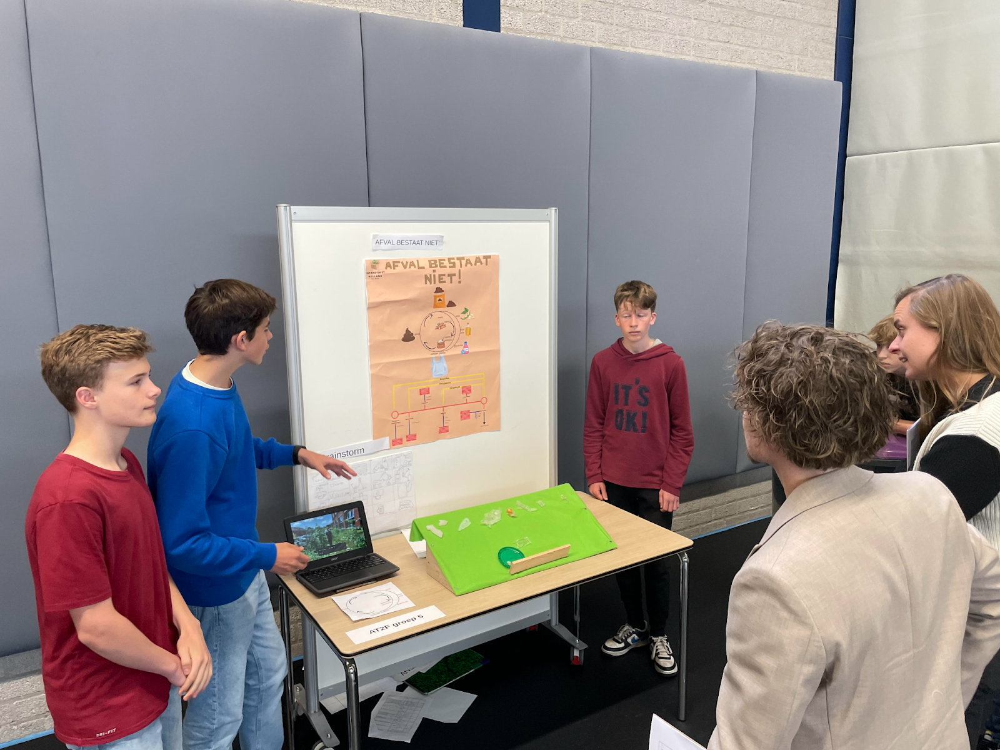

Afval bestaat niet!
- Naam: Pieter Oosterling, Klas: AT2f
- Groepsnaam/team: Inpakdienst Holland
- Opdrachtgever: Virgil Grot
- Opdracht: Afval bestaat niet!
Onderzoek
Wij hebben op het begin een onderzoek gedaan naar hoe de afvalstroom in elkaar zat. (zie de afbeelding hieronder) Daarna hebben we een onderzoek gedaan naar hoe we een verpakking kunnen maken die milieu bewust is en die circulair is. We hebben veel ideeën gehad en bedacht, maar kwamen uit eindelijk op: "Eetbaar Plastic" (meer weten over eetbaar plastic, lees uitleg)
Uiteindelijk is dit ons eindontwerp geworden:
Technische tekeningen:
Uitleg
We hebben als eerst onderzoek gedaan naar bindmiddelen die natuurlijk zijn. We zijn toen op aardappelzetmeel en tapiocazetmeel uitgekomen. We hebben toen gezocht naar hoe bioplastic wordt gemaakt. We kregen toen een recept en zijn aan de slag gegaan. Thijn heeft samen met z'n moeder zijn keuken gemaakt. Je hebt een pan nodig en een bakplaat en een keuken. We hebben als eerst 100% tapiocazetmeel gebruikt, met dat middel krijg je een heel jellerig middel. (zie foto) We hebben daarna wat minder tapiocazetmeel en 50% aardappelzetmeel gebruikt. Dan krijg je een sterker en minder jelle rig plastic. Dit is ook ons eindproduct. (zie foto 2) We dachten toen: "Een komkommer en paprika hebben geen sterk maar folie achtig plastic nodig!" We zijn hier mee gaan experimenteren en wat blijkt als je alle tapiocazetmeel inruilt voor aardappelzetmeel dat je folie eetbaar plastic krijgt. (zie foto 3)
(Dit is een korte samenvatting hiervan, kijk in het verslag bij het tussenkopje: Eindontwerp/deelopdracht 5)
Geleerd
We hebben naar mijn mening in dit project veel geleerd. We hebben een presentatie gehad van Avalex, we moesten prototypes maken, verslagen maken, onderzoek naar de afvalstroom en een eindproduct maken. We hebben dus veel praktijk dingen gedaan. Ik denk dus ook dat ik van deze dingen heb geleerd. Ik denk dat omdat we hebben leren onderzoeken naar een recept en die in de werkelijkheid hebben gemaakt. Toen we die plastic echt hadden was ik ook best wel trots op mezelf, maar ook op mijn team. Het gaf namelijk de conclusie dat het onderzoek was gelukt!
Circulair
Ons systeem werkt als volgt:
- Het begint allemaal met het zakje zelf, de consument nuttigt de verpakking.
- Daarna gaat de consument naar de wc en doet de tweede boodschap.
- Wij vangen de tweede boodschap op bij de zuiveringscentrales.
- Van die uitwerpselen maken wij weer menselijke mest.
- Die mest gebruiken wij om soja(-olie), Tapiocazetmeel, glycerine.
- Van die producten kunnen we weer Eetbaar plastic maken
- De consument koopt het prodcut en eet de verpakking op.
- En dan is het circulaire systeem rond.